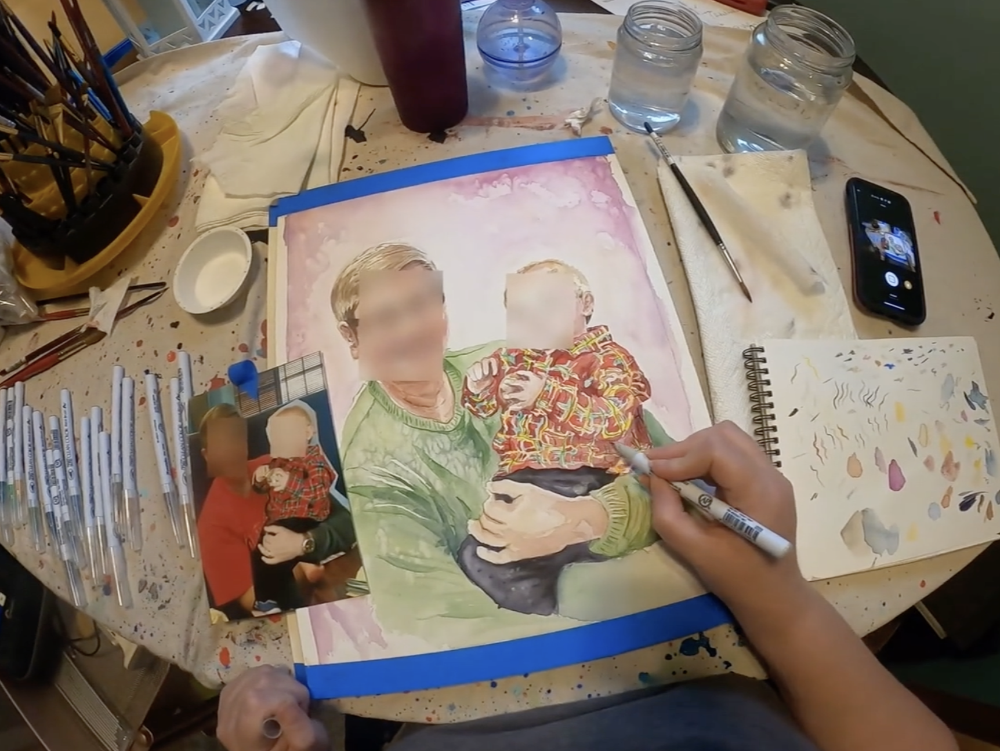
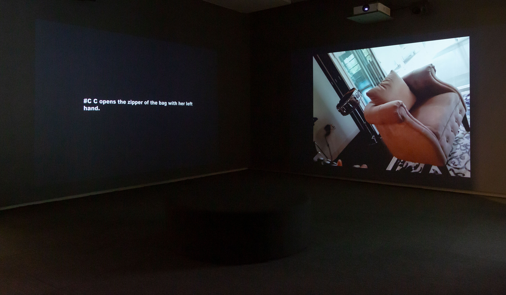
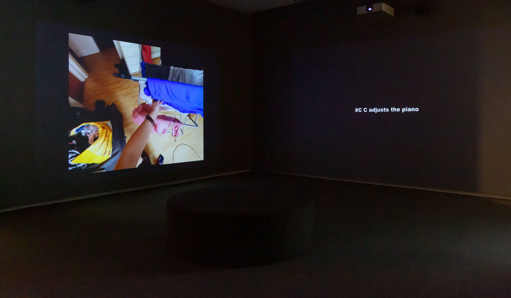
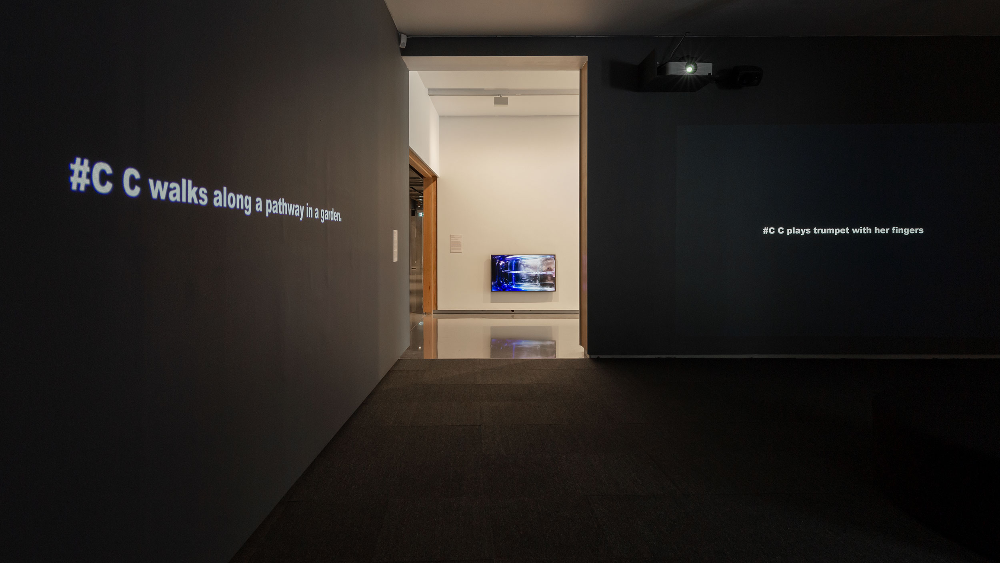

#C
| Date: | 2025 |
| Format: | 4 channel video installation, 75min |
| Credit: | Machine Listening (Sean Dockray, James Parker, Joel Stern) |
| Index: | dataset-critique installation |
View the official documentation for this installation on the Machine Listening website

Overview
In #C, Machine Listening work with and against Ego4D, a dataset released by Facebook AI in 2021 to advance the automation of ‘egocentric perception’. ‘Today’s computer vision systems excel at naming objects and activities in Internet photos or video clips’, Facebook’s researchers explain, but they are much worse at understanding ‘fluid video streams … where we see the world through the eyes of an agent actively engaged with its environment.’ This first-person or ‘egocentric’ point of view is the perspective of robotics, of augmented and virtual reality: of Ray-Ban smart-glasses and the Metaverse. Like all perspectives, it has to be constructed.
The videos in Ego4D were captured by 855 ‘unique camera wearers’ from 9 countries, before being annotated by low-paid ‘narrators’, tasked with describing what they see in order to train Meta's multimodal machine learning systems accordingly. #C is the subject of every one of the 3.85 million resulting annotations. #C opens the washing-machine. #C cuts spinach with a sickle. #C hits the guitar strings with a pencil. #C removes the egg trays from the machine with the plastic board. Officially, #C denotes the camera wearer, but it also names a new kind of subject position, and the nameless protagonist of an emergent and doubly egocentric image economy.
In this multichannel work, Machine Listening loop twenty 4-minute long videos from Ego4D, or 0.03% of the total dataset. Each video is narrated by an ambiguously located synthetic agent, and accompanied by the sounds and annotations of other videos in the work. None of this was ever intended for human eyes or ears, of course. Ego4D is dataset cinema for an algorithmic audience. But #C doesn’t just offer a glimpse behind the curtain. The treatment of the materials is deliberately estranging, as video, audio, text, and voice are all de-aligned, tweaked, and reconfigured. The effect is to draw out and enhance the weirdness, artifice, and voyeurism already present in the dataset: a sense, perhaps, that perspective itself is being captured, mined, and commodified.
Installation images
  
Workshop
Exhibited
- Image Economies, MUMA, Melbourne, 2025